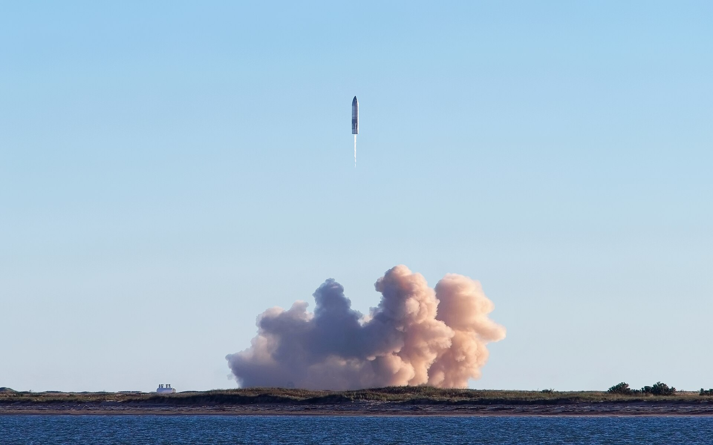
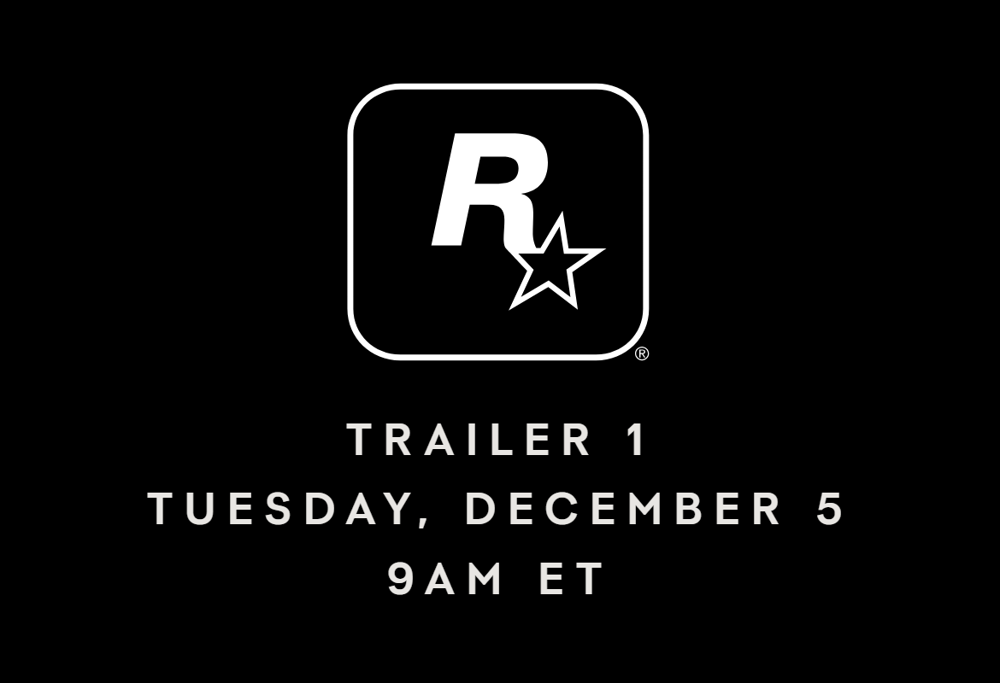
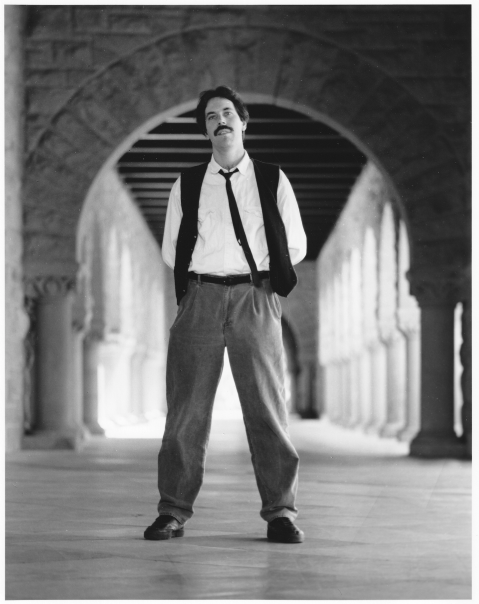

Vol. I · No. 35 · Monday, June 22, 2026 · 13 items · 7 sections · ~14 min read
A record rocket-maker hands back six hundred billion dollars in three trading days even as it asks the bond market for twenty billion more; the Supreme Court restores a conviction in the country's most famous missing-child case; and Colombia swings hard right by less than a single point.
1
The Splash · Markets & deals · New York
SpaceX sheds $600 billion in three days, then asks the bond market for $20 billion more

A SpaceX Starship test launch. The company began trading on Nasdaq ten days ago and has surrendered most of its IPO gains since. — Wikimedia Commons / Jenny Hautmann, CC BY-SA 4.0
Ten days after the largest initial public offering in history, the market is having second thoughts. SpaceXInstitutionElon Musk's rocket and satellite company, which absorbed his AI venture xAI and listed on Nasdaq as SPCX on June 12, 2026 in the biggest IPO ever. fell 16.4% on Monday to close near $154.60, its lowest since the first day of trading, capping a three-session slide of roughly 23% that has erased more than $600 billion in market value. The stock priced at $135 on June 12, spiked to $225.64 by June 16, and is now down more than 20% from that peak.
The trigger was a financing, not a setback. On Monday SpaceX launched its first-ever bond sale, a debut U.S. dollar investment-gradeConceptA credit rating high enough (BBB-/Baa3 or better) to signal low default risk. SpaceX drew investment-grade marks from Moody's, Fitch, and S&P, letting it tap institutional bond buyers cheaply. offering of senior notes seeking around $20 billion, with Bank of America, Citigroup, Goldman Sachs, JPMorgan, and Morgan Stanley running investor calls. The proceeds repay a $20 billion March bridge loanConceptShort-term financing meant to be refinanced quickly. SpaceX took the bridge after folding in xAI; the bond is the permanent debt that “takes out” that loan. taken after the xAI merger, plus general corporate purposes and the company's accelerating data-center and AI buildout. SpaceX disclosed roughly $100.8 billion of cash on hand as of June 19.
Equity investors read a $20 billion capital raise as a tell about how much the AI ambition will cost, and they sold. KeyBancInstitutionKeyBanc Capital Markets, a research and investment-banking arm of KeyCorp. Its analysts initiate coverage and rate stocks; a “Sector Weight” is a neutral call. initiated coverage at the neutral Sector Weight, calling the valuation increasingly stretched after the post-IPO run. The selling spread across the launch complex, with Virgin Galactic down about 11% and Rocket Lab off roughly 8% even as the latter joined the Nasdaq 100.
Why it mattersA bridge-to-bond takeout syndicated by all five bulge-bracket banks, days after a record listing, is the capital-markets playbook in miniature, and a rare case of a stock falling precisely because the company raised credit. It is the live read on how the market will price the OpenAI and Anthropic offerings queued behind it.
The Supreme Court restores the Etan Patz conviction, reversing the Second Circuit
The Supreme Court on Monday reinstated the murder conviction of Pedro Hernandez in the 1979 disappearance of Etan PatzPersonThe six-year-old who vanished walking to a school-bus stop in SoHo in 1979, one of the first missing children pictured on a milk carton. Hernandez, a former bodega clerk, was convicted in 2017., the boy whose vanishing became one of the most famous missing-child cases in American history. In a per curiamConceptAn unsigned opinion issued “by the court” as a whole, typically for matters the Justices treat as resolved without full briefing and argument. opinion, the Court ruled 6-3 that the Second Circuit had exceeded its authority under federal habeas law in ordering Hernandez released or retried.
The appeals court had faulted a jury instruction on how to weigh Hernandez's confessions. But the Justices held that no clearly established federal law required it, the bar set by AEDPAConceptThe 1996 Antiterrorism and Effective Death Penalty Act. Its section 2254(d)(1) forbids a federal court from overturning a state conviction unless it defied “clearly established” Supreme Court law., the 1996 statute that sharply limits federal review of state convictions. Justices Kagan, Sotomayor, and Jackson dissented, saying they would have denied the state's petition. The conviction stands; Hernandez is entitled to neither release nor a new trial.
Why it mattersIt is a vivid lesson in how much AEDPA deference constrains federal habeas review: even a circuit panel that doubts a confession's reliability cannot disturb a state conviction absent a square Supreme Court holding on point.
Colombia elects a Trump-backed right-wing outsider by less than a point
Abelardo de la EspriellaPersonA 47-year-old millionaire criminal-defense lawyer nicknamed “El Tigre,” the Tiger. A political newcomer who has never held elected office, he holds dual U.S.-Colombian citizenship and is a registered Republican., a millionaire criminal-defense lawyer who calls himself “El Tigre,” won Colombia's presidential runoff on June 21 with 49.65% to Senator Iván CepedaPersonA veteran leftist senator and human-rights advocate, the candidate of outgoing President Petro's bloc, who lost the runoff by under a percentage point.'s 48.70%, with nearly all ballots counted. The roughly 12.9 million votes cast for him were reported as the most ever for a Colombian presidential candidate.
A newcomer who has never held elected office, de la Espriella was endorsed by President Trump, who congratulated him on Monday. He campaigned on Bukele-style security, pledging to build ten mega-prisons and “eliminate” armed groups that resist, and his win ends four years of leftist rule under term-limited Gustavo PetroPersonColombia's outgoing first leftist president, a former guerrilla. He alleged “irregularities” in the count and cast doubt on the result., who alleged irregularities and questioned the count.
Framing noteThe right (Fox) frames it as liberation, an “anti-cartel” hardliner who will end the “socialist era”; the left and center (Al Jazeera) lead with the “far-right” label and the democratic-backsliding worry, foregrounding Petro's fraud claims and the mega-prison pledge.
Why it mattersA Trump-aligned, U.S.-citizen president in Bogotá realigns Washington's most important Andean security and trade partner, and a Bukele-style legal regime of mass incarceration and emergency powers will draw constitutional and human-rights litigation for years.
Capability, the labs, and the law racing to catch them.
4
Artificial intelligence · San Francisco
OpenAI turns its cyber model loose on open source, and ships a sharper one
The Pioneer Building in San Francisco, OpenAI's headquarters. — Wikimedia Commons / Dllu, CC BY-SA 4.0
OpenAI on Monday launched Patch the PlanetConceptAn OpenAI program, part of its Daybreak security line, that points an AI model at widely used open-source code to find and fix security holes, with every result vetted by human experts., a program that points its newest security model at the open-source software the internet runs on, then gates every finding behind human review. Built with the security firm Trail of BitsInstitutionAn elite New York security-research and audit firm. It supplies the expert human reviewers who confirm and triage the model's findings before they reach maintainers. alongside HackerOne and the maintainers themselves, the five-day pilot produced hundreds of discovered bugs and turned them into 64 pull requests and 51 filed issues across 19 projects, with more than 30 projects, among them cURL, Go, Python, and pyca/cryptography, signed up to take part.
The engine is a new GPT-5.5-CyberConceptOpenAI's security-tuned model. The full version stays restricted to vetted “trusted defenders,” a deliberate gate on a system that can both find and exploit software flaws., which OpenAI says reaches 85.6% on the CyberGymConceptA benchmark that measures whether an AI agent can locate real software vulnerabilities. A companion test, ExploitGym, measures whether it can weaponize them into working exploits. vulnerability-finding benchmark, up from 81.8% for the general model. The full model stays locked to vetted defenders through a Trusted Access program, the company's answer to the obvious dual-use problem: the same system that patches a flaw can find one to attack.
Why it mattersA frontier lab voluntarily deploying an offensive-capable cyber model into critical infrastructure, and walling the full version behind human review, is the live template for AI-liability and responsible-deployment language that will fill the labs' IPO risk factors. The contrast is pointed: OpenAI is being applauded for capability that drew an export crackdown on Anthropic ten days ago.
Capital markets, the IPO window, and the money behind the money.
5
Markets & deals · New York
The Russell 2000 clears 3,000 for the first time as Big Tech sinks
The Nasdaq MarketSite in Times Square. The tech-heavy Nasdaq Composite fell 1.3% even as small caps set a record. — Wikimedia Commons / Bjoertvedt, CC BY-SA 4.0
The market split in two on Monday. The Russell 2000ConceptThe benchmark index of small-capitalization U.S. stocks. Its level is read as a gauge of risk appetite and of the domestic economy beneath the megacaps. small-cap index closed at 3,000 for the first time in its history, while the tech-heavy Nasdaq Composite fell 1.32% to 26,166.60 and the S&P 500 slipped 0.37% to 7,472.79. The Dow, lighter on technology, rose 148 points to 51,712.71.
The damage was concentrated at the top: Alphabet fell about 5%, Amazon nearly 4.8%, Microsoft 3%, and Meta 2.3%, with SpaceX's 16% drop adding to the megacap rout. The breadthConceptHow widely a move is shared across stocks. A record in small caps while megacaps fall is a “broadening” that desks read as money rotating out of the crowded AI trade. divergence, a record in the small caps as the giants slid, came as the 10-year Treasury yieldConceptThe yield on the benchmark U.S. government note, the reference rate for mortgages and corporate borrowing. A rise signals investors demanding more to lend, a headwind for richly valued growth stocks. climbed toward 4.5%, a two-week high, and oil eased despite progress in the U.S.-Iran talks.
Why it mattersA small-cap record diverging from a megacap selloff is the clearest signal yet that the AI-concentration trade is rotating, the kind of broadening that capital-markets desks read for where risk appetite is heading into the second half.
Uber-backed Lime sets IPO terms, targeting up to a $1.66 billion valuation
LimeInstitutionLegally Neutron Holdings, the e-scooter and e-bike rental operator running in about 230 cities. Uber is a backer and integrates Lime vehicles into its app., the e-scooter and e-bike rental company formally Neutron Holdings, set terms for its Nasdaq listing on Monday, offering roughly 6.96 million shares at $24 to $26 to raise up to about $182 million and value the company as high as $1.66 billion. The stock will trade under the ticker LIME, with Goldman Sachs, JPMorgan, and JefferiesConceptThe lead bookrunners, the banks that build the order book, set the price, and allocate shares in an IPO. Their mandate signals how the offering is being marketed. leading the bookrunners.
Lime operates in about 230 cities and counts UberInstitutionThe ride-hail giant, a Lime backer that surfaces its scooters and bikes inside the Uber app. A strategic-investor exit at IPO is a return event for Uber's own balance sheet. among its backers. Pricing is expected in the week of June 29, a test of whether the 2026 IPO window holds beyond mega-listings like SpaceX and reaches name-brand but smaller growth companies.
Why it mattersA recognizable mobility name setting terms is a cleaner read on the health of the IPO market than a one-off mega-deal, and it is a textbook Goldman-JPMorgan-Jefferies underwriting mandate to watch price.
The Supreme Court's end-of-term crush, and the questions it leaves open.
7
Law & the courts · Washington
Alito and Thomas dissent as the Court ducks whether race factors into a Fourth Amendment “seizure”
The Supreme Court, which turned away the case in its June 22 order list. — Wikimedia Commons / Joe Ravi, CC BY-SA 3.0
In its June 22 order list, the Supreme Court declined to hear United States v. CarterConceptA case asking whether the perceptions a court attributes to a racial group can shape the Fourth Amendment test for when police have “seized” a person. Cert was denied, leaving the question unresolved., but Justice Alito, joined by Justice Thomas, dissented from the denial. The question was whether the perceptions a court attributes to a racial group bear on when a person has been “seized”ConceptUnder United States v. Mendenhall (1980), a person is seized when a reasonable person would not feel free to leave. The D.C. Circuit asked how that feels to “an objective and reasonable Black man.” under the Fourth Amendment.
Below, the D.C. CircuitInstitutionThe U.S. Court of Appeals for the D.C. Circuit, often called the second-most important federal court. It held that Donte Carter had been seized, weighing the effect of police conduct on a reasonable Black man. held that Donte Carter had been seized, weighing the effect police conduct would have on “an objective and reasonable Black man.” AlitoPersonJustice Samuel Alito, who with Justice Thomas would have taken the case. A dissent from a denial of certiorari flags a question the writer thinks the Court should soon resolve. wrote that the lawfulness of a race-conscious seizure inquiry “is an important question,” asking how it would extend to other minority groups.
Why it mattersA dissent from a denial is a flare: two Justices are signaling that the race-specific reasonable-person test is a doctrinal split the Court will eventually have to settle, even though it passed for now.
The same order list revives an influencer's wiretap fight and clears a Texas execution
The Court's Monday orders cut two ways. In Grayson v. United StatesPersonAshley Grayson, a Dallas social-media influencer convicted in a murder-for-hire plot caught on a recorded FaceTime call. The Court gave her conviction a second look., the Justices vacated the Sixth Circuit and ordered it to reconsider whether the federal wiretap exclusionary ruleConceptTitle III's section 2515 bars illegally intercepted communications from evidence. At issue is whether an unwritten “clean-hands” exception lets in recordings the government did not itself capture. contains an unwritten “clean-hands” exception for recordings the government did not itself make, over a dissent by Justice Alito.
In the same list, the Court denied review 6-3 in Saldaño v. TexasPersonVictor Saldaño, a Texas death-row inmate whom both defense and state experts found intellectually disabled, with an IQ of 74. The Court refused to halt his execution., clearing the way to execute a man both defense and state experts found intellectually disabled, with an IQ of 74. Justice Sotomayor dissented, joined by Justices Kagan and Jackson, invoking Atkins v. VirginiaConceptThe 2002 decision holding that executing the intellectually disabled violates the Eighth Amendment. Its protection can founder on state procedural rulings, as the dissent warned here..
Why it mattersOne order list, two windows: the scope of the federal wiretap exclusionary rule that every white-collar and privacy lawyer touches, and the fragility of Atkins when even prosecutors concede disability but state procedure stands.
Consequential developments, and how the spectrum frames them.
9
The world · Beijing · LLCR
Beijing answers the Pentagon blacklist with curbs on U.S. defense and rare-earth firms
The Mountain Pass mine in California, run by MP Materials, the only active U.S. rare-earth operation and a target of Beijing's new controls. — Wikimedia Commons / Tmy350, CC BY 2.0
China retaliated on Monday for a U.S. defense blacklist, placing 10 American firms on its export-control list and halting Chinese dual-useConceptGoods with both civilian and military applications. Export-control regimes on both sides police them, which is why a rare-earth or robotics supplier can be swept up in a national-security action. exports to them. The list names the rare-earth miners MP MaterialsInstitutionOperator of the Mountain Pass mine in California, the only active rare-earth mine in the United States and the centerpiece of Western efforts to break dependence on Chinese supply. and USA Rare Earth alongside drone and defense suppliers including Red Cat, Ball Aerospace, Oshkosh Defense, and an L3Harris maritime unit. A separate Finance Ministry order barred Chinese government buyers from 46 more U.S. companies, among them subsidiaries of Lockheed Martin, Raytheon, and General Dynamics.
Beijing cast the move as direct payback for the Pentagon adding Chinese technology firms, including Alibaba and Baidu, to its 1260H listConceptThe Defense Department's roster of “Chinese military companies,” named for the statute that requires it. A designation carries reputational weight and can foreshadow tighter restrictions. of “Chinese military companies” earlier in June. The action lands about a month after Trump's Beijing visit with Xi Jinping that was meant to stabilize relations, and analysts across outlets called it largely symbolic, since the targeted defense firms barely sell into China to begin with.
Why it mattersIt is a controlled escalation in the U.S.-China tech-and-defense decoupling, mirror-image export-control law and rare-earth leverage, calibrated to signal resolve after the summit without detonating the relationship. The “symbolic” read is the point: Beijing is managing the ladder, not climbing it.
Film, television, video games, and the business and law beneath them.
10
Video games · New York
Grand Theft Auto VI sets a June 25 pre-order date, and Take-Two climbs again

Promotional art for Grand Theft Auto VI, whose November 19 launch is the biggest entertainment release of the decade. — Wikimedia Commons / Rockstar Games
Rockstar GamesInstitutionThe Take-Two studio behind Grand Theft Auto and Red Dead Redemption. GTA VI is the most anticipated game in the medium's history and the company's central revenue event. confirmed that pre-orders for Grand Theft Auto VI open June 25, with the game launching November 19 on PlayStation 5 and Xbox Series consoles and a PC version to follow. The studio revealed cover art for protagonists Lucia Caminos and Jason Duval in the fictional state of LeonidaPlaceThe fictional, Florida-inspired setting of Grand Theft Auto VI, centered on a Miami-like Vice City., but pointedly did not announce a price.
That omission is the story Wall Street is trading. Analysts peg the base case at $80, with Jefferies' James Heaney calling a $100 sticker “unlikely,” while Take-TwoInstitutionTake-Two Interactive, Rockstar's parent. It guides to roughly $8.0 to $8.2 billion in net bookings for fiscal 2027, a forecast that leans heavily on the GTA VI launch. guides to roughly $8.0 to $8.2 billion in fiscal-2027 net bookingsConceptA games-industry revenue measure capturing the value of digital and physical sales and in-game spending recognized in a period, the headline number for a publisher's guidance.. The stock rose nearly 3% on the June 18 announcement and climbed further toward $248 on Monday; a Bloomberg survey shows 97% buy ratings and no sells.
Why it mattersA single distribution-logistics announcement with no price attached moved a roughly $40 billion company, a clean study in how launch-window signaling drives equity value at an IP-concentrated publisher, and the $80-versus-$100 question is a live consumer-pricing and revenue-recognition variable for the biggest launch of the decade.
Amazon drops a near-finished Sam Altman biopic, and Hollywood won't touch it
Amazon MGM StudiosInstitutionAmazon's film-and-television studio, built on its 2022 purchase of MGM. It greenlit and financed “Artificial” before walking away from the finished film. has walked away from Luca GuadagninoPersonThe Italian director of Call Me by Your Name and Challengers. “Artificial,” his Sam Altman film, casts Andrew Garfield as the OpenAI chief.'s “Artificial,” a roughly $40 million, nearly complete film with Andrew Garfield as Sam Altman that dramatizes OpenAI's 2023 firing-and-rehiring weekend. By the weekend of June 21, Netflix, A24, Focus Features, and Warner Bros.' Clockwork had all passed, with the arthouse distributor MubiInstitutionA subscription streamer and increasingly aggressive theatrical distributor of art-house films. A Mubi pickup would point toward a fall festival premiere. emerging as the lead suitor and Neon circling.
The timing is the conflict. Amazon dropped the finished film shortly after striking a roughly $50 billion partnership with OpenAI, saying only that “Artificial” would be “better served” by another studio. A distributor abandoning a completed picture for apparent strategic reasons tied to an AI investment is a clean case in distribution-agreement exit terms and how platform money now bends greenlight decisions.
Why it mattersThis sits squarely on the AI-and-entertainment-law seam a future EASL lawyer will work: content-licensing leverage, conflict-of-interest in distribution, and the new reality that a $50 billion AI deal can decide whether a finished film reaches an audience.
Ted Gioia stakes his life's work on a word critics mock: authenticity

The critic Ted Gioia, who published his “Authenticity in Music” essay in full on June 21. — Wikimedia Commons
Ted GioiaPersonA jazz historian and cultural critic, author of Music: A Subversive History, who writes the widely read The Honest Broker. published “Authenticity in Music” in full on June 21, framing it as one of the big essays of his career as a critic, worked on for years. Against the modern critical consensus that musical authenticityConceptThe contested idea that a performance carries a real, felt quality of being genuine. Much academic criticism treats it as a marketing fiction; Gioia argues it is real and cravable. is a marketing gimmick or an ideological construct, Gioia argues it is a real and cravable property: some performers have it and some do not, and it is the hidden source of music's power.
The argument runs counter to a generation of theory that taught critics to hear authenticity as a pose. On The Honest BrokerInstitutionGioia's Substack, one of the most-read culture publications on the platform, where he writes long-form criticism on music and the arts., Gioia makes the unfashionable case that the listener's instinct for the genuine is tracking something true rather than being fooled.
Why it mattersAuthenticity-versus-construct is the live wire under the whole AI-content debate: Gioia's defense of an irreducibly human signal in art maps directly onto the question of what survives when machines can generate the form but not the source.
Source: The Honest Broker ↗ · Single-source: an original essay by a named critic.
13
Ideas · Books · The life of the mind
Bakhtin's strangest book gets a new translation, and a new defense
In the June 25 issue of The New York Review of Books, the Slavic scholar Gary Saul MorsonPersonA literary critic and Slavicist at Northwestern, among the most prominent living interpreters of Russian literature and of Bakhtin's thought. reviews a new translation of Rabelais and His World by Mikhail BakhtinPersonThe Russian literary theorist (1895–1975) whose ideas of dialogism, polyphony, and the carnivalesque reshaped how critics read the novel., rendered by Sergeiy Sandler with a foreword by Caryl Emerson for MIT Press. Long the most puzzling book in Bakhtin's body of work, the carnival study has seemed to contradict the rest of his thought.
Morson's project is to reassemble how it fits, recovering the carnivalesqueConceptBakhtin's idea that carnival inverts hierarchy and lets competing voices loose, a theory of how authority is destabilized by laughter and the crowd. as a serious account of how authority is unsettled by competing voices rather than an outlier to be explained away.
Why it mattersBakhtin's carnival and polyphony are the canonical theory of how a single authoritative voice gives way to many, a genuine life-of-the-mind anchor for anyone thinking about institutions, interpretation, and the dialogic.